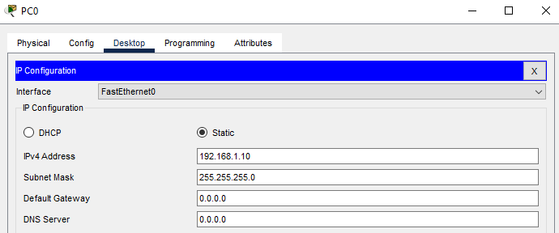
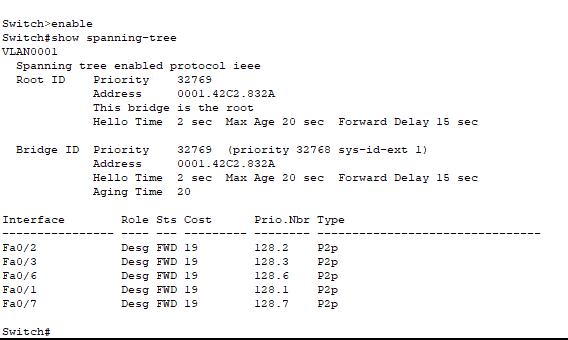
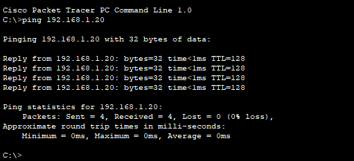
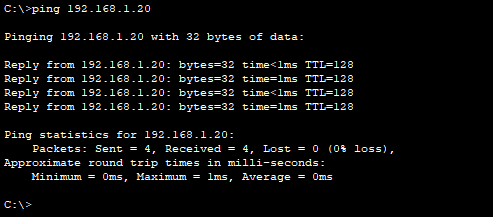
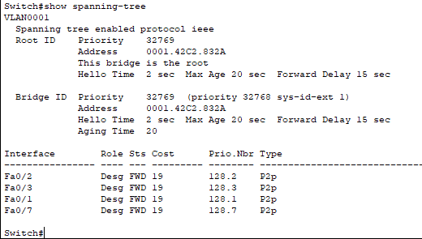

Redundant Link Failure and STP Recovery
Problem Description
Issue Overview:
Redundant links provide network reliability by creating backup paths between switches. However, without proper loop prevention mechanisms like Spanning Tree Protocol (STP), these redundant links can cause broadcast storms and network instability. This scenario demonstrates how STP manages redundant links and automatically recovers from link failures.
Common Symptoms:
- Network loops causing broadcast storms without STP
- Temporary connectivity loss during STP reconvergence
- Unpredictable traffic paths in redundant topologies
- MAC address table instability
- High CPU utilization on switches during topology changes
Root Causes:
- Physical link failures in network infrastructure
- Improper STP configuration or disabled STP
- Mismatched STP modes between switches
- Incorrect root bridge selection
- Slow STP convergence times
Network Setup
Network Components:
- 3x Cisco 2960-24TT Switches (Switch0, Switch1, Switch2)
- 2x Client PCs (PC0, PC1)
- Redundant links between all switches
Network Design:
- Full mesh topology with redundant paths
- PC0 connected to Switch0 (Fa0/1)
- PC1 connected to Switch2 (Fa0/1)
- Each switch pair connected with dual links for redundancy
Initial Configuration
PC0 Configuration:
PC0 is configured with IP address 192.168.1.10/24
STP Initial State
Spanning Tree Protocol Status:
Initial STP configuration shows:
- Root Bridge ID: 0001.42C2.832A (Switch1 is the root bridge)
- All ports on Switch0 are in Designated/Forwarding state
- STP is preventing loops by blocking redundant paths on other switches
- Hello Time: 2 sec, Max Age: 20 sec, Forward Delay: 15 sec
Connectivity Verification
Initial Connectivity Test:
Ping from PC0 (192.168.1.10) to PC1 (192.168.1.20) is successful with 0% packet loss, confirming that the network is functioning properly with STP managing the redundant links.
Link Failure Simulation
Simulating Link Failure:
To demonstrate the benefit of redundant links and STP's automatic recovery capability, we simulate a link failure by disconnecting one of the active links between Switch0 and Switch2.
Expected Behavior:
- STP detects the topology change
- Previously blocked ports transition to forwarding state
- Network connectivity is maintained through alternate paths
- Brief interruption during STP reconvergence (30-50 seconds with default timers)
Post-Failure Verification
Connectivity After Link Failure:
Even after removing one link, connectivity between PC0 and PC1 is maintained. STP automatically activated an alternate path, demonstrating the value of redundant links.
STP Status After Failure:
STP has adapted to the topology change:
- Root Bridge remains the same (0001.42C2.832A)
- Port roles have been recalculated
- Previously blocked ports may now be forwarding
- Network has converged to a new loop-free topology
Solution and Best Practices
Step 1: Implement Rapid Spanning Tree Protocol (RSTP)
For faster convergence, configure RSTP on all switches:
Switch(config)#spanning-tree mode rapid-pvst
Switch(config)#exitRSTP provides convergence times of less than 1 second compared to 30-50 seconds with traditional STP.
Step 2: Configure Root Bridge Priority
Manually set the root bridge for predictable behavior:
Switch1(config)#spanning-tree vlan 1 priority 4096
Switch0(config)#spanning-tree vlan 1 priority 8192
Switch2(config)#spanning-tree vlan 1 priority 12288Lower priority values have higher preference for root bridge election.
Step 3: Configure PortFast on Access Ports
Enable PortFast on ports connected to end devices:
Switch(config)#interface fastEthernet 0/1
Switch(config-if)#spanning-tree portfast
Switch(config-if)#exitPortFast allows access ports to transition immediately to forwarding state.
Step 4: Implement Link Aggregation
For better bandwidth utilization, configure EtherChannel:
Switch(config)#interface range fa0/2-3
Switch(config-if-range)#channel-group 1 mode active
Switch(config-if-range)#exitEtherChannel bundles multiple physical links into one logical link.
Troubleshooting Guide
Common Issues and Solutions:
- Issue: Slow network recovery after link failure
Solution: Implement RSTP instead of traditional STP - Issue: Unpredictable root bridge selection
Solution: Manually configure bridge priorities - Issue: Broadcast storms in redundant topology
Solution: Ensure STP is enabled on all switches - Issue: Suboptimal traffic paths
Solution: Adjust port costs to influence path selection
Verification Commands:
show spanning-tree- Display STP configuration and statusshow spanning-tree summary- View STP summary informationshow spanning-tree interface [interface]- Check specific port STP statusshow spanning-tree root- Display root bridge informationdebug spanning-tree events- Monitor STP topology changes
Best Practices
- Always enable STP in networks with redundant paths
- Use RSTP or MST for faster convergence
- Document the intended root bridge and backup root bridge
- Configure root bridge priority explicitly
- Use PortFast on access ports but never on trunk ports
- Implement BPDU Guard on access ports for security
- Monitor STP topology changes and investigate unexpected changes
- Consider link aggregation for better bandwidth utilization
- Test failover scenarios during maintenance windows
- Keep STP timers consistent across all switches
Packet Tracer Simulation
Download the complete Packet Tracer simulation file to practice redundant link configuration and STP behavior:
Download Simulation File